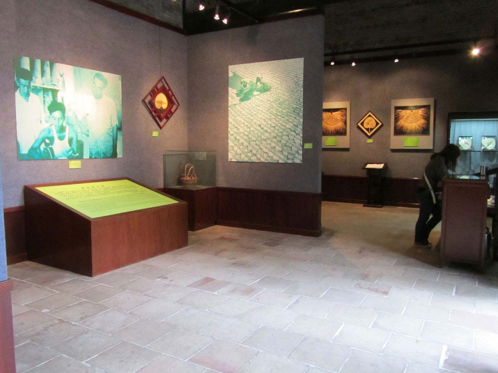

后东厢
东厢房是陈姓子弟在省城广州读书应考，办理诉讼、缴纳赋税等事务的临时居所。室内装饰壁画《滕王阁》图，图中描绘才气过人的年轻诗人王勃，意气风发地吟作“滕王阁序”的场面。王勃是唐朝初期四大杰出诗人之一，他父亲王福是交趾的县令，王勃探亲途中经过南昌，正碰上洪州都督九月九日在滕王阁大宴宾客。王勃被邀请到滕王阁赴宴，文人骚客聚会一堂，王勃即席挥毫写下了中国文学史上千古传诵的名篇《滕王阁序》，全文765字，文辞优美，那雄健奔放的气势，起伏跌宕的节奏，令人叹为观止。